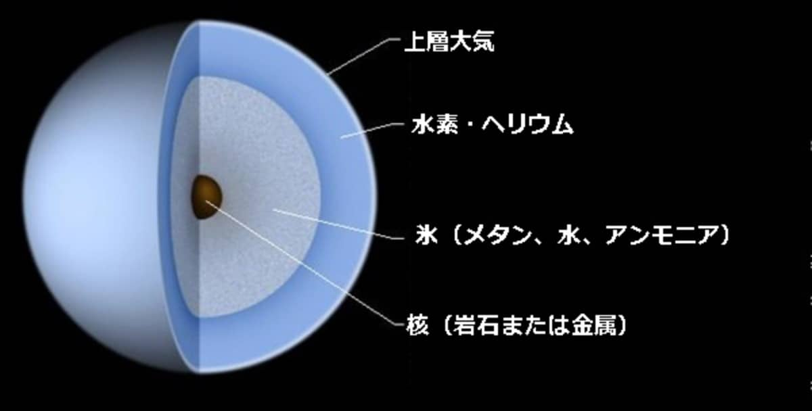

(2024/03/13)
土星の概要
太陽系第七惑星です。巨大な環で有名です。
直径が地球の4倍あり、5万1100kmです。27個の衛星を持っています。
自転周期は17時間で公転周期は84年です。
木星と同じガス惑星ですが主成分がメタンやアンモニアなので天王星型惑星
と呼ばれることもあります。
天王星の平均気温は-224℃です。時速900kmの風が吹いています。
土星の構造
基本構造

中心から岩石の核、氷を含んだマントル、水素とヘリウムの大気、その上層にメタンの大気で構成されたガス惑星です。
メタンが多いので赤色が吸収され青く見えます。
横倒しの自転軸
自転軸が97.9°で横倒しの状態になっています。
これによって片側はずっと夜、もう片方はずっと昼という状態になります。
天王星の環
天王星にも13本の環が発見されています。
天王星ができたばかりの時に原始惑星が衝突してその時の塵が環になったと考えられています。
また、衝突の時に天王星が横倒しになったとも考えられています。
宇宙豆知識(なぜ天王星の磁場がずれているのか)
天王星の磁場の中心が惑星の中心からずれた場所にあります。
岩石惑星で磁場を持っているのは水星と地球です。共通点としては、内部に液体の核があるということです。
しかし、ガス惑星には、液体の核がないため、磁場を生成する流体運動が惑星の中心付近ではなく、
惑星の核よりも外側の領域で起こっているからだと考えられています。